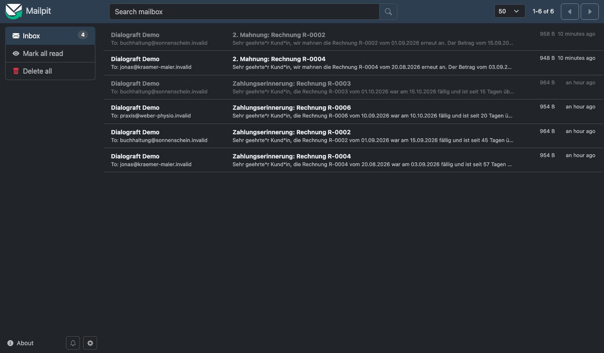
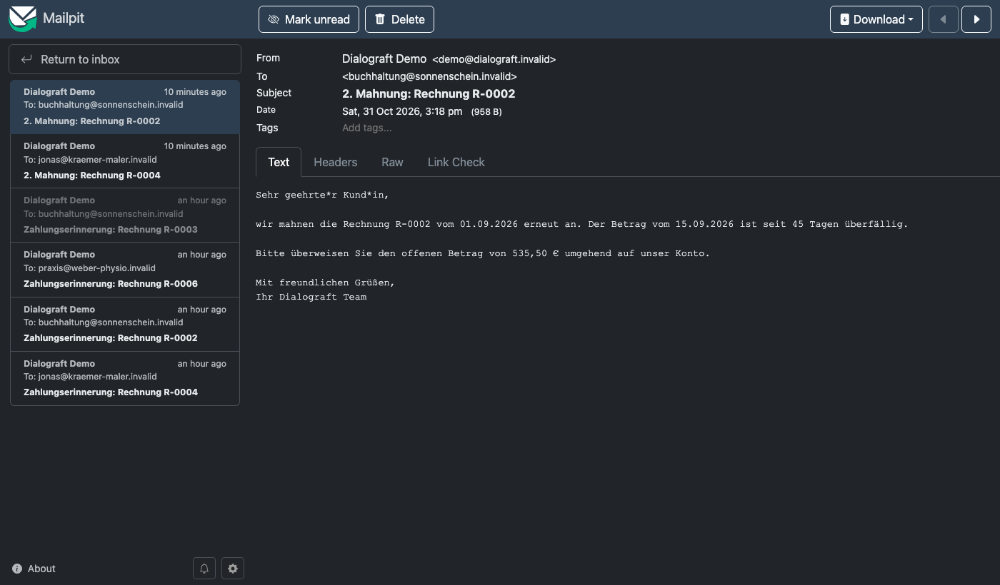

Dialograft
Software entwickelt sich im Gespräch.
Eine kleine Rechnungs-SaaS, die man per Chat bedient. Fehlt eine Funktion, nimmt das System den Wunsch auf, klärt ihn, lässt ihn bewerten, macht ein Angebot und lässt ihn von einem lokalen Coding-Agenten umsetzen. Review, Merge und Deployment bleiben menschliche Entscheidungen.
Ein kompletter Lauf: CSV-Export für den Steuerberater
Echte Aufnahme vom 31.10.2026. Die Kundennachrichten kommen aus einem Skript; Antworten, Bewertung, Agentenläufe, Reviews und Deployment sind echt. Mit einer Schutzregel, die greift, und einem Review, das Änderungen verlangt. 1,4-fach beschleunigt, Wartezeiten geschnitten.
Am 31.10.2026 live gemessen
Vom Wunsch zur Mahnung, mit Zeitstempeln
Ein echter Lauf. Die Zeiten stammen aus dem Verlauf der Anfrage in der Datenbank; die Pausen sind Teil des Ergebnisses.
Lücke festgestellt, Anfrage angelegt
Der Client prüft zuerst den Funktionskatalog. Kein Werkzeug für eine zweite Mahnung, also eine echte Produktlücke. Bereits genannte Angaben („nach 30 Tagen“) werden übernommen, nicht erneut gefragt.
Umfang v2 bestätigt
Ziel, Auslöser, Verhalten, Ausnahmen, Annahmen und prüfbare Akzeptanzkriterien. Vorschläge zählen erst nach Bestätigung.
Ticket, Bewertung, Angebot v1
GitHub-Issue mit Label auto-implement. Das lokale Modell liest einen fixierten Commit; jeder Codebeleg muss wörtlich in der genannten Datei stehen.
Verbindung zum Runner nach 300 s verloren
Der Worker meldete die Übergabe an das Team, statt etwas zu behaupten. Ursache: Header-Timeout von fetch. Behoben durch ein asynchrones Runner-Protokoll.
Neue Bewertung mit erfundenen Belegen
Das Modell lieferte 30 sich wiederholende Belege, einige der falschen Datei zugeordnet. Die Prüfung verwarf sie; Ergebnis needs-human. Prompt und Schema wurden verschärft.
Angebot v2 angenommen, Auftrag AU-0002
Neu bewertet am geänderten Commit. Das ältere Angebot ist ungültig; nur das aktuelle, konkrete Angebot erzeugt einen Auftrag.
Draft-PR #3
Kurzlebiger Container, Typecheck, Tests und Build vorher und nachher, Pfadregeln geprüft. 7 Dateien, +426 Zeilen, davon ein neuer Test.
Review und Merge
Jannis prüft und merged ausdrücklich. Kein unbeaufsichtigter Merge.
Freigegebener Commit bereitgestellt
Nur der gemergte Commit darf als bereitgestellt markiert werden. Danach Prüflauf zum Stichtag 30.10.2026.
Die Mahnung kommt im Testpostfach an
Mailpit als lokales Testpostfach. Der Adapter akzeptiert nur Adressen unter der reservierten Domain .invalid; reale Empfänger sind ausgeschlossen.


Was das System selbst gestoppt hat
Ein Agent, der Code schreibt, braucht Grenzen, die nicht von seiner Selbsteinschätzung abhängen. Alle Fälle hier sind live aufgetreten.
Änderung an geschützten Dateien
Der Agent änderte den Datenspeicher, einen bestehenden Test und später einen Test-Helfer, obwohl die Aufgabe es untersagte. Der Runner verwarf jeweils das ganze Ergebnis; kein PR.
Grüne Tests, falsches Verhalten
Ein Lauf bestand alle Prüfungen, hätte aber an den falschen Mailserver gesendet und ein Zahlungsziel in der Vergangenheit genannt. Bei FR-0002 fand das Review fehlerhafte Grammatik, eine gestrichene Zahlungsaufforderung und doppelten Code. Jede Ablehnung startet eine neue Agentenrunde mit allen Review-Notizen.
Erfundene Codezitate
Bewertungen mit paraphrasierten oder falsch zugeordneten Zitaten führen nie zu einem Angebot, sondern zur menschlichen Prüfung.
Veraltete Angebote
Ändert sich der Umfang oder die Codebasis, wird das offene Angebot ungültig. Angenommen werden kann nur die aktuelle Version.
Drei Tokens, ein Werkzeugkatalog, ein isolierter Agent
Entscheidungen
- Zod-Schemas sind die einzige Quelle: API-Validierung, OpenAPI und MCP-Katalog werden daraus erzeugt.
- MySQL mit expliziter Store-Abstraktion; Jobs, Mitteilungen und Audit entstehen in derselben Transaktion wie die fachliche Änderung.
- Preise sind deterministisch: Arbeitspakete × Stundensatz, Risikoaufschlag auf die Obergrenze. Das Modell erfindet keine Summe.
- Getrennte Entscheidungen: Prüfung, Angebotsannahme, Merge, Deployment.
Stack
- TypeScript, Node.js, Fastify, Zod, MCP SDK, mysql2, PDFKit, ExcelJS
- Kubernetes unter OrbStack, Docker, Mailpit
- Ollama mit
qwen3-coder-next, Qwen Code im Container - Vitest (52 Tests), MySQL-Integrationstest in CI, GitHub Actions
Was diese Demo nicht behauptet
- Keine produktive Buchhaltung, keine echten Zahlungen, keine realen Empfänger. Alle Dokumente sind Demo-Daten.
- Der Agentencontainer ist eingeschränkt, aber sein Netzwerkzugang ist nicht vollständig isoliert. Gedacht für ein kontrolliertes Repository.
- Grüne Tests beweisen keine Korrektheit. Deshalb bleibt das menschliche Review Pflicht, und es hat im Live-Betrieb echte Fehler gefunden.
- Agentencode braucht oft mehrere Runden: Für einheitliche Mahntexte (FR-0002) lehnte das Review drei Pull Requests ab, bevor der vierte bestand.
Den ganzen Ablauf live sehen
Der Quellcode ist offen auf GitHub (MIT). In einer persönlichen Vorführung auf meinem Mac zeige ich den kompletten Weg: Chat, Klärung, Bewertung, Angebot, Agentenlauf, Review und Deployment, mit einer Funktion, die Sie vorschlagen.
Schreiben Sie mir für einen Termin am einfachsten über LinkedIn, wo Sie diese Seite gefunden haben. Wenn Sie über einen anderen Weg hierher gekommen sind, erreichen Sie mich über GitHub: github.com/ioannis-koulouris.
Dialograft ist ein Demonstrationsprojekt von Jannis Koulouris. Alle Kunden, Rechnungen und Adressen sind erfunden.